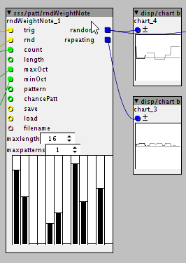

I don't really see the point in making a multiband compressor. Just use a crossover-filter and add some of these compressors behind it..
Module requests
SirSickSik
#86
well, writing a dedicated module won't change much of that.. a crossover compressor just takes quite some cpu..
jaffasplaffa
#87
Yeah, it is the whole multiband set up that is a bit complicated. Not sure if I have done it right, but it sounds okay. At some settings I can hear the bands overlap, which results in some annoying artifacts. Trying to create something to fix that, byt making the bands not cross over to much. I am using 12db filters now, maybe using 24db filters will help on that, will try this. I think also some filters that goes up to 24khz would be great for this. I am going to try sputnkis version of 24 khz filters later today. For the version I have now, I have also used filters without resonance, like lp1 and hp1 but I guess I am going to have to try with some resonant filters to get a better range on the bands.
jaffasplaffa
#89
h yes I see, but the range of it is only to 12 khz. Ill try anyway when I am home inthe afternoon.
In my version of the cross over filters I have done like this:
{kind=link}
The black wires shows which filtere are controlled by the same knob. FOr example the lo pass called "A lo mid lp" is controlled by the same knob as "B lo mid hp". It is really just the band that selects the border between lo and lo mid band "A lo mid lp" defines the HIGH border of the low band and "b lo mid hp" defines the LOW border low mid band.
SirSickSik
#90
overhere you're using multiple filters for actually doing the same thing. remember, using a 6dB LP filter and subtracting it from the original signal will automatically give you the HP filter output. So for each crossover frequency you just need to use a single LP filter with a subtract module. Each next stage will cost you another filter with which you can subdivide one of the bands from the first filter
jaffasplaffa
#91
SOunds more effective what you write. I think I have apicture of what you mean in my head now. I am going to try this out later. There is something similar to a crossover filter in the factory library too, the filter/multimode svf m.
But first Ill try the 6db version and see where that'll take me. The SVF multimode has resonace which I am trying to avoid.
Thanks for the input, @SirSickSik 
jaffasplaffa
#92
You mentioned something about subtracting lp from hp. I think I got it working now. Great.
Much cheaper setup that my own setup.
Will be doing some more testing.
Thanks
jaffasplaffa
#94
Multiband system:
4 band filter that works pretty well... 6% for the bands. Insert your own effects to each band, for example compressors
Multiband subtract for com.axp (11.8 KB)
a version with only community library objects:
Multiband subtract for com 1.axp (12.3 KB)
SirSickSik
#95
it's best to use a float calculation for this, you count up all the values and scale that total as being 100%, then multiply the value of each of these sliders to that scaled "normalisation" to get their respective percentage
jaffasplaffa
#96
Could you post an example? I have no idea how to do that. IS this what @philoop suggests?
Thanks
SirSickSik
#97
I got it working already, though I haven't used any floating point values haha
it was a bit late yesterday and I think I accidentally mixed up solutions for different goals., not sure what I was thinking at that moment haha
anyways, it's coming up, but I'm still "updating" the idea with some extra's
oeh, this is starting to be quite nice indeed..
jaffasplaffa
#98
Haha, no problem
So, you are building a multi-something anyway?
If so, might I suggest a few things:
a. Solo button for the bands. I made one simple one where I fed all 4 bands into a muxer and then use a ctrl/i to select which band to solo. You can only solo one at a time like this, but it is better than nothing:
b. Also maybe only create the multiband system, with in/outlets for adding what ever effects you like, saturation, compressor, etc. This will make it a way more flexible system. Somestimes I like to add sub for low band, saturation for mid band, and some filtering maybe for hi band. The system would be a bit like:
http://www.bluecataudio.com/Products/Product_MB7Mixer/
Anyway, the system I got working is only 6% so that is all ready pretty nice. And thanks again for the tips for the filters
philoop
#99
Thank you very much Sir!!!

another request from me would be weighted rythm....with faders to weight
16/12/8/6/4/2/1 note length/ rest length (triplets?)
jaffasplaffa
#100
Ahh ok sorry @SirSickSik
I thought your comment about patching something up was directed at the multiband system. I see it was for @philoop
jaffasplaffa
#102
I think the 6% I got it down to is pretty decent. There is lots of room for other things, so I think I'll just leave it where it is